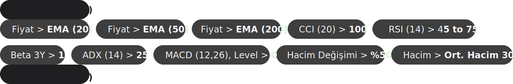

Aktif Tutar
Günlük
Güncel Portföy
Canlı
Risk / Hedef
Strateji
- Başlangıç sermayesi
20.000 TL; swing trade için kullanılır ve portföyde aynı anda2–6hisse tutulur. -
Sıfırdan başlarken, TradingView’daki filtre setinden (eklediğin görsel)
1–2hisse seçilip alım yapılır.  -
ATR’ye göre stop-loss ve çıkış (TP) seviyeleri belirlenir. Toplam risk bütçesi
sermaye x %2:20.000 x 0,02 = 400 TL. Pozisyon büyüklüğükabul edilen zarar / stop oranıile hesaplanır (ör. stop%5ise400 / 0,05 = 8.000 TL). -
Bir pozisyon kapanınca (stop/TP), portföydeki açık pozisyonların potansiyel zararları toplanır ve
400 TL’lik bütçeden düşülür. Kalan risk ile yeni pozisyon açılır (ör. kalan140 TLve stop%5ise140 / 0,05 = 2.800 TL). - Kar alırken sistem hedefi sabit: risk/ödül oranı
1 : 2,5. - Portföy büyüdükçe risk bütçesi de büyür;
%2kuralı devam eder (400 TL sabit kalmaz).